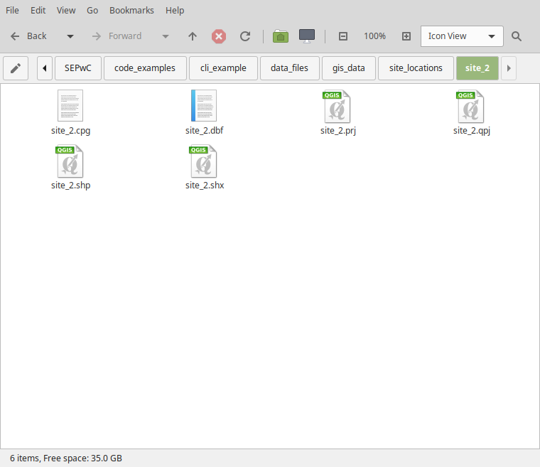

How a computer works#
Computers have been around since the 1940’s. The first computers were mechanical; using valves to store and process information. By the 60’s and 70’s they had moved to silicon transistors; tiny gates that store a 1 or 0 (on or off). A modern computer CPU (Central Processing Unit) will have around 20 billion transistors, each around 5 nm in size (human hair is 70 microns thick, so around 1000 times thicker than the CPU transistor!).
The modern computer has several parts we need to know about in order to use them well:
A CPU: the processing unit of the computer. Carries out the instructions (we are going to give it!)
RAM: Random Access Memory, or often memory. Typical computers have 4 - 16 Gb (giga bytes). This is non-permanent storage. Turn your computer off and what is in RAM disappears.
Storage. Often a hard (drive) disk (HDD) or a solid state drive (SSD). This is permanent storage and where you keep your files.
Graphics card or chip: Modern computers can display more colours than the eye can see and at a resolution that is comparable to the human eye. To do that they have a dedicated chip, often called a GPU (Graphical Processing Unit). NVidia is a popular brand.
Operating System (OS): This is Windows, Linux, MacOS, etc.. It lives on the storage.
BIOS: Basic Input-Output System. Computers need something to tell them what to do when you turn it on. The BIOS does this. It’s a very basic OS on a chip.
A computer works by reading the BIOS, which then starts the OS loading from disk to RAM. Once done, you can then log on and start using it. There is a lot of jargon around computers. We will try and cover this as we go, but look up anything you come across that isn’t explained.
Filesystems#
Every computer needs to store files so it can be used. A variety of media have been used in the past to do this: punch cards, tapes, floppy disks, CDs, DVDs, and of course, hard drives and solid state drives. How we store the data onto the drive is called the filesystem. You may have come across things like FAT95, NTFS, ext4, journaling, etc. These are all types of filesystems. Fortunately, we rarely need to care about this (unless we want to plug storage from a Mac into Windows or vice-versa); the OS takes care of this for us. Each OS uses a different filesystem. Macs use Apple File System (APFS), Windows uses NTFS, Linux uses ext4 or similar.
The OS then stores files on its filesystem. Each OS has different characteristics and ways of storing your files. This we do care about. As we will be writing software that will load in data from files at some point, we need to understand how to access files and hence, we need to understand the filesystem for he OS we’re using. We’ll go through each OS in turn.
Windows#
Windows organises files into drives. Drives are usually physical drives, but can be partitions on a single drive too (i.e. divide your 1 Tb drive into a 250 Gb drive and a 750 Gb drive). Drives are given letters, A:, B:, C:, etc. C: is the root drive where Windows actually lives, along with your programs (apps) and your data and files.
Practical exercise
Why C:? What’s wrong with A? Search and find out.
Solution
A: and B: were reserved for floppy disks, which is what early MSDOS computers generally had.
From the drive, folders are separated with a \ symbol (backslash). Software is generally installed
in C:\Program Files (or C:\Program Files (x86) for older software). Your documents are
in a magic folder called Documents. It’s possible to get this to point to network drives or
to your local hard drive. However, a standard Windows 11 machine will have this pointing to
C:\Users\*Username*\. Likwise for, Downloads, Music, Desktop, Pictures, etc.
Why do we care? When writing code, we often need to know exactly where a file is; it’s not enough to know
it’s in Documents; we need a full path (see later).
Linux#
Linux organises things around the root drive, which is access via / (forward slash: note the direction of the slash compared
to Windows - yes, they use the opposite direction). In root you then find a bunch of standard directories, \etc, \bin
\var, etc. These contain the system files. One directory is called \home. This is where user files live. Within
\home there is a directory with your username. Within there are your images, music, etc.
Unlike Windows, drives can be mounted anywhere in the file structure and this is generally transparent to the user. So for example
\home can be mounted onto a completely separate physical hard drive to the rest of the folders. The same applies to any
folder. Temporary drives will be mounted into \media or \mnt. Note that Linux filenames are case-senstive, so Bob.txt is
a different file to bob.txt
MacOS#
Mac is very similar to Linux (it is in fact based on Unix, which Linux is too). Unlike Linux, Apple added some standard folder names and moved a few things around compared to Linux. I’ll note the differences only here.
User directories live in \Users rather than \home. Applications are stored \Applications, but there
are some binaries (i.e. programmes) in \bin, etc.
Like Linux, MacOS is case sensitive.
Exercises#
As we have to deal with multiple OSes, from here we will designate sections with symbols.
{kind=link}
{kind=link}
{kind=link}
{kind=link}
{kind=link}
Absolute vs Relative paths#
Most of the file-paths above are absolute paths. You start at the root of the drive (C: or /) and give the
all the directories until you get to the file you’re after. I did however sneak in a few relative
paths. These are paths that start from where you currently are (be that in the command line or running
a programme).
Let’s do an example. Here’s an absolute path:
/home/jon/my_exciting_project/data/very_important_data.csv
Now let’s cd into the scripts folder
cd /home/jon/my_exciting_project/scripts
The data (very_important_data.csv) is one directory up (now in my_exciting_project) and then into data.
So relative to scripts, that’s ../data/very_important_data.csv
This is a really useful thing. Rather than give a full/absolute path, we can give relative paths to file. Imagine I had written a script that used absolute paths to data on my computer and gave that to you. It would not work as you’re not on my computer and you are not logged in as me even if you were. You would then have to edit every path in the script. However, if I give relative paths, as long as the directory structure is the same, the script will work.
The downside of relative paths is that you must have the same directory structure, relative to the script. If you move the script elsewhere, things might break. You can, of course, mix and match; so pull data from an absolute path in one place and from a relative path in another. Finally, you can ask the user where to get data from too (or pull data from the internet) saving all this hassle.
However, when starting to write your own script you will hard-code the filenames and hence you need to know the difference between relative and absolute paths.
From source code to programme#
You may have heard the term source code (I’ve probably used it already!), but what is it? Computers work by moving gates back and forth (0 or 1) to perform operations. A modern computer can do billions of these every second (this is the clock speed so 1 Ghz can do 1 billion ‘things’ per second). The moving of these gates allow the computer to add two numbers or multiple two numbers or move data around, etc. These are called instructions. The CPU translate these instructions into moving those gates around to actually do something. Ultimately, all computer code does this. It is possible to write computer code at this level: assembler code. Back in the day (i.e. when I started programming), this is how you programmed computers, especially for games where you needed maximum performance. This is an example of assembler code for an x86 processor (i.e. what the type of processor you probably have):
.486
.MODEL FLAT
.CODE
PUBLIC _myFunc
_myFunc PROC
; Subroutine Prologue
push ebp ; Save the old base pointer value.
mov ebp, esp ; Set the new base pointer value.
sub esp, 4 ; Make room for one 4-byte local variable.
push edi ; Save the values of registers that the function
push esi ; will modify. This function uses EDI and ESI.
; (no need to save EBX, EBP, or ESP)
; Subroutine Body
mov eax, [ebp+8] ; Move value of parameter 1 into EAX
mov esi, [ebp+12] ; Move value of parameter 2 into ESI
mov edi, [ebp+16] ; Move value of parameter 3 into EDI
mov [ebp-4], edi ; Move EDI into the local variable
add [ebp-4], esi ; Add ESI into the local variable
add eax, [ebp-4] ; Add the contents of the local variable
; into EAX (final result)
; Subroutine Epilogue
pop esi ; Recover register values
pop edi
mov esp, ebp ; Deallocate local variables
pop ebp ; Restore the caller's base pointer value
ret
_myFunc ENDP
END
Fortunately, things have moved on and we can write code in higher level languages. These come in two broad types: compiled and interpreted. Compiled languages go through a two-step process to be turned into a programme. Interpreted languages do not, and can be run (executed) immediately
Compiled languages#
Compiled languages are ones like FORTRAN, C, C++. You write code as text files, then compile these into an executable. You can then give someone else the executable and they can run the software. Most software is written in those kind of languages. Note that the user does not need the source code. Languages like Java are also compiled but at the time of execution (called Just in Time or JIT) languages. Java bridges the gap between compiled and interpreted.
Interpreted languages#
In contrast, interpreted languages are not compiled. You execute the source code. So you can write a text file with your code and run it straight away. Examples of languages that are interpreted are R, Python, Matlab. You therefore need another user to have the python executable their system to be able to run your code. The user must also have your source code. This is the main difference between compiled and interpreted languages. Compiled languages are a lot more flexible and require the user to do less. Interpreted languages are easier (don’t need to compile!) but need a user to set something up ahead of time.
The line between these is getting blurred all the time as you can compile Python into an executable and use C within a Python programme without pre-compiling. However, for most users, the distinction is clear: if you must compile to run, then it’s a compiled language. If you don’t need to do that it’s interpreted. Some languages are both.
So what happens during compiling or interpretation? Remember that assemble code above? That’s what the compiler does to your source code. It turns it from human readable code to those CPU instructions. Modern compilers are very clever and can optimise your code very well to get the most out of your computer. Interpreters do the same thing but as you execute the script. The python (or R) executable is therefore turning your code/script into those kind of instructions as it’s running. Interpreted languages are therefore generally slower than compiled code as the interpreter cannot optimise as well as a separate compiler.
More basic command line functions#
You were introduced to some basic command line functions earlier. We looked at those without really explaining them properly, so let’s dig a little deeper into command lines.
The Command Line Interface (CLI) is a powerful way of interacting with a computer. Imagine you have a folder full of images and you want to move those that have “_final_” in their name somewhere else. In the GUI, this could take a while. In the command line it’s a single command.
CLIs work by running the command you type, plus the arguments you give it. Arguments can be mandatory or optional (and therefore called options). A typical command might look like:
This copies (cp) my_dir to my_dir2 recursively -r. The two
directory names are mandatory arguments. The -r is optional.
Attention
Windows options are given by / like fc /c file1 file2
Attention
Linux and MacOs options are given by either - or --
Most commands have a help option. For Windows /? is common, on MacOS and
Linux -h or --help is used. You can also use the help that comes with
the OS, so on Windows help copy will display the manual page for the copy
command. On MacOS/Linux man cp will do the same.
Why should we care about this? Many higher-level langauges like Python and R can move, copy, create, and delete files. Their functions to do this are based heavily on the command line commands to do the same thing. By understanding how the commands built into the OS we’re using, we simplify somethings later. Moreover, many tools we will use later to help use develop better software (like revision control) are also based on these commands. Finally, by getting a better understanding of how the computer works, we can be more efficient at using one and hence get more done when programming.
So what are the basic commands you should know? Here’s a list:
mv
mkdir
cp
ls
pwd
rm
rmdir
ren or move
md
copy
dir
del
rmdir
Attention
rm, del, and rmdir delete files permanently. They do not move the into Trash or similar.
Practical exercise
Find what the basic commands do
For the list of commands above, search for each one, or use the help system, and work out what they do. Have a look through the options too. Some might not be that useful and you may never need them, but some are very useful!
Practical exercise
Using some basic commands
We’re going to carry out some file operations in the GUI file manager first, then do the exact same commands in the command line using the zip file and folder we extracted earlier.
Using the GUI
Navigate to
cli_example/data_files/gis_data/site_locationsmake a new directory
site_2Copy all the files there except site1.csv to
site_2directoryrename all the files from
site_1.*tosite_2.*
You should have something like this:
Navigate to
cli_example/data_files/notesDelete the
notes.txtNavigate to
cli_examples/documents/notesMove the
notes.txtfile one direcotry up tocli_example\documentsDelete the notes folder
Rename
cli_exampletocli_example_gui
Now reset, by extract/unzip-ing the cli_example.zip (to make a new version of the original folder).
Using the CLI
Do the same as above, but using the command line only. The only exception is the last bullet point where you should rename to
cli_example_cli
Solution
cd cli_example/data_files/gid_data/site_locations
mkdir site_2
cp site_1.* site_2
cd site_2
mv site_1.prj site_2.prj
mv site_1.qpj site_2.qpj
mv site_1.cpg site_2.cpg
mv site_1.dbf site_2.dbf
mv site_1.shp site_2.shp
mv site_1.shx site_2.shx
cd ../../../notes
rm notes.txt
cd ../../documents/
mv notes/notes.txt ..
rmdir notes
cd ../../
mv cli_example cli_example_cli
cd cli_example\data_files\gid_data\site_locations
md site_2
copy site_1.* site_2
cd site_2
ren site_1.prj site_2.prj
ren site_1.qpj site_2.qpj
ren site_1.cpg site_2.cpg
ren site_1.dbf site_2.dbf
ren site_1.shp site_2.shp
ren site_1.shx site_2.shx
cd ..\..\..\notes
del notes.txt
cd ..\..\documents
move notes\notes.txt ..
rmdir notes
cd ..\..\
ren cli_example cli_example_cli
Learn More
In the above example, the renaming of files with the same name, but different extensions is a little cumbersome. It was fine with six
files, but what if there were 100 files. On the command line that’s annoying. In the GUI it would be very annoying! In Linux there is the
rename command that can do it in one go. You can also write a small bash script to do it in a loop. In windows you can download tools
that do this or, like Linux, write a short script to do it. This shows the power of the command line and scripting.